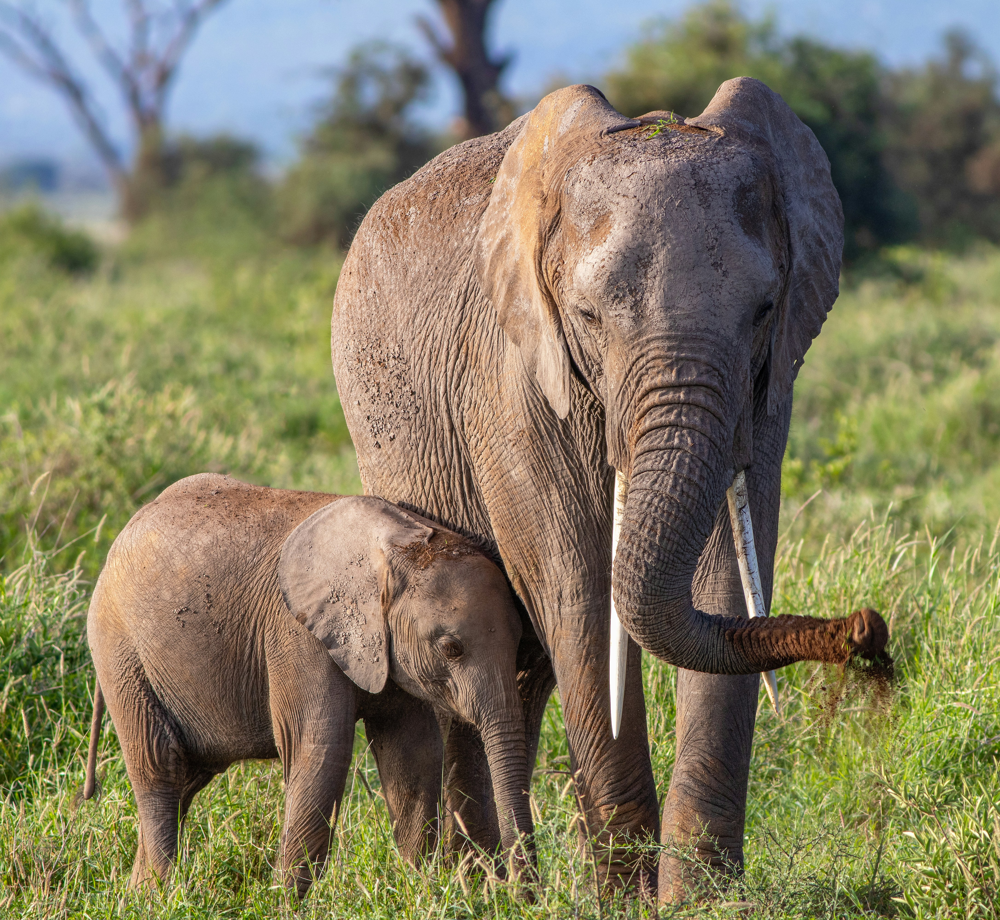
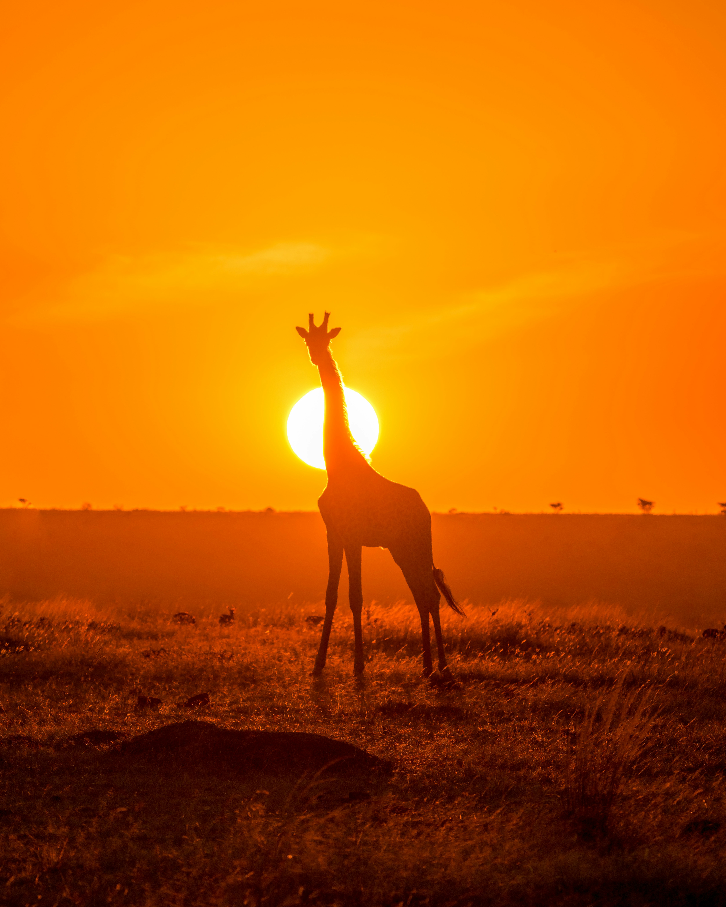

kenya is a country located in east africa, known for its diverse landscapes, wildlife, and rich cultural heritage. it is home to some of the most iconic wildlife species in the world, including lions, elephants, giraffes, and zebras. kenya is also famous for its beautiful beaches along the indian ocean, as well as its stunning national parks and game reserves, such as the maasai mara and amboseli national park. the country has a rich history and culture, with over 40 different ethnic groups and a vibrant music and arts scene. kenya is also known for its long-distance runners, who have achieved international success in athletics. overall, kenya is a country that offers a unique blend of natural beauty, wildlife, and cultural experiences that make it a popular destination for tourists from around the world.




foods in kenya